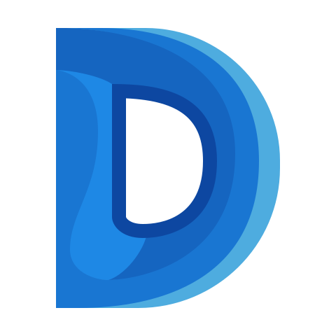
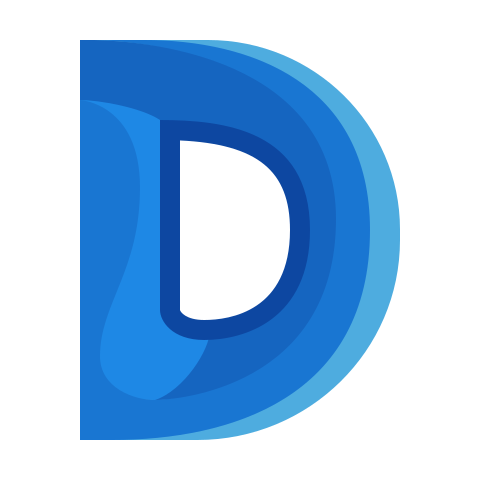
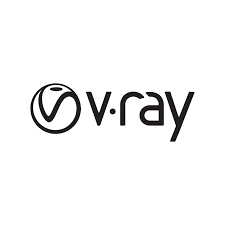
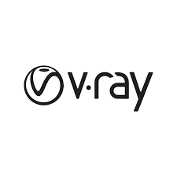
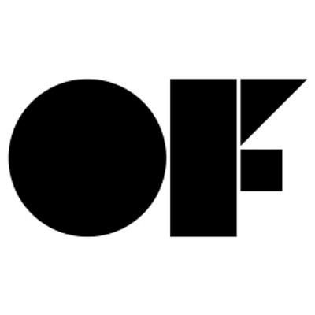
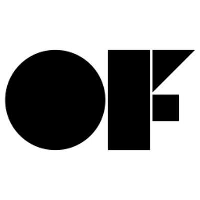
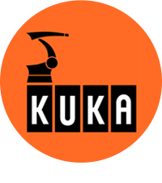
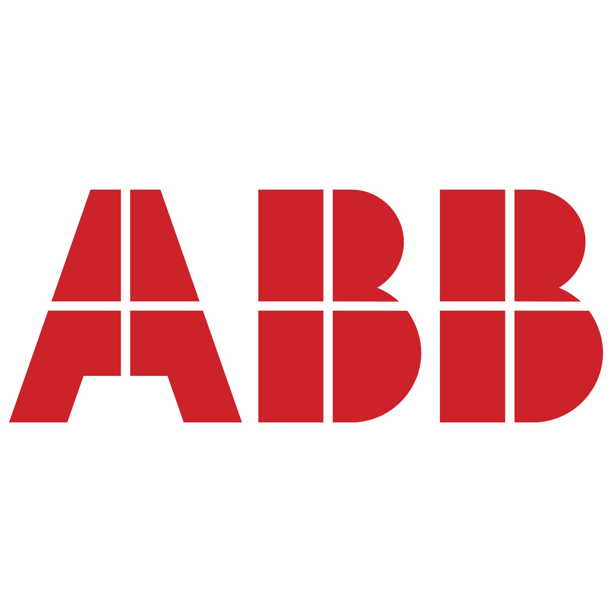

Math Whittaker
Computational Design Portfolio
Skills
Softwares
 


 

Languages and Frameworks


 



Digital Fabrication
 

Education
B.A Hons Three Dimensional Design - Manchester Metropolitan University 2016
Masters of Design Studies (Technology) - Harvard University 2018
Professional Experience
Sigmamu Studio, UK—Co-Director/ Computational designer
Sept 2020 - PRESENT
Co- founded Sigamamu studio, this is a design consultation studio focused on developing solutions to design problems through the use of computational design techniques as well as designing solutions with modern technologies including micro electronics and digital fabrication. Through this I have worked on various projects including developing Javascript webtools, rewriting and optimizing grasshopper scripts, developing designs for small scale architecture.
New Balance, USA— Technical Designer 2
January 2019 - September 2019
Worked as Technical Designer 2 for New balance. In this role I created computational design tools for new balance to help designers develop designs faster. Some of these tools were written in C# for Grasshopper to aid the computational design department. I also developed tools in Javascript, Java, processing and python in order to develop tools based on Photoshop in order to create tools which could be used by less computationally skilled designers. I also worked on using computational design techniques such as agent based simulation in conjunction with data collected from athletes in order to create high performance data driven designs.
Harvard University , USA— Teaching Assistant
January 2018 - May 2018
Worked as a Teaching Assistant for "Digital Media 2" Class at Harvard University. The focus of this class was to teach students the skills and thought processes required to create interactive designs. Through this I taught and ran classes in C++ for arduino/proton, how to collect data and then reinterpret it to create interactive designs, And help the students develop the design aesthetics of their project.
Jali Ltd, UK—R&D Researcher
August 2014 - July 2016
I worked as a researcher in the manufacturing and design research department. Through this I worked on various projects from developing manufacturing methods for large scale industrial robots including 3D printing techniques and flame cutting. I also worked on reorganising the company's factory layout in order to increase efficiency. Finally I worked on smaller scale projects including developing a 3D printer in order to increase prototype development and give customers a better idea of what the custom product they would receive was going to look like
Ockenden Engineering, UK—Cad Designer
July 2011 - August 2014
Generated 2D sheet metal drawings in solidworks for various projects ranging from small scale automotive parts to large scale commercial engineering projects such as developing a carbon neutral power generators
Achievements
Awards
Exhibitions